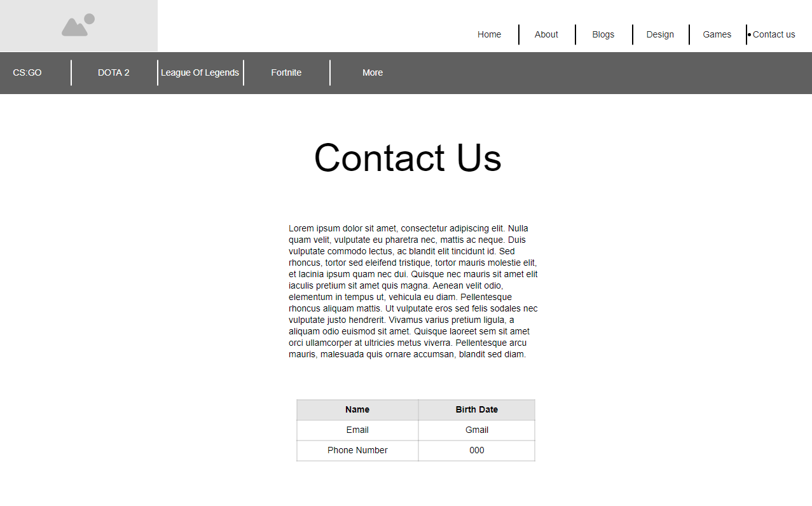

The first wireframes for the website started off looking like this! There have been allot of changes as can first been seen with the diffrences in color, however, the website has followed very similar layots too each wireframes listed. As of writting this there are no pie charts and the data is not placed next to each other rather in seperate pages. The bottomnav bar has canged too as it no longer displays the games as I felt as of this moment the website does not have enough games for that to be a feature and I was too proud of the second navigation bar that I decided to put Blogs, Games and Designs there until it can be updated. Another issue is that when it comes to the information in the bottom nav it is harder to make it responsive if it is long. The contact page has changed with the additon of less information and a table where instead of putting my details the visitor can put their details in.
